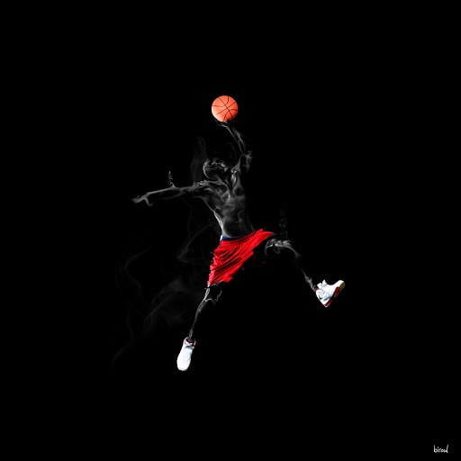

See All Match Histories here

NBA Announces Officials For The NBA Finals 2020
September 30, 2020
NEW YORK, Sept. 30, 2020 – The NBA today announced the list of 12 referees who will officiate the NBA Finals 2020 presented by YouTube TV. The championship series between the Miami Heat and Los Angeles Lakers tips off on Wednesday, Sept. 30 at 9 p.m. ET on ABC.
“Congratulations to this outstanding group on a well-deserved honor. A Finals assignment is the pinnacle of the prfession for our officials,” said Byron Spruell, NBA President, League Operations. “We are grateful for their dedication to the game and the sacrifices they have made during an unprecedented season.”
Finals officials were selected by the NBA Referee Operations management team based on their performance throughout the first three rounds of the 2020 playoffs. Officials were evaluated after each round to determine advancement in this year’s postseason.
Three of the 12 have officiated at least 10 Finals games: Foster (19), Davis (12) and Capers (10).
The officiating roster also includes three first-time Finals referees, Tony Brown, Pat Fraher and Josh Tiven.
NBA officials Courtney Kirkland and Kevin Scott have been assigned as Replay Center officials for The Finals 2020.
Individual game assignments for referees are posted at NBA.com/official at approximately 9 a.m. ET each game day.